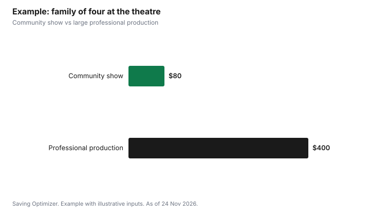

Entertainment · Canada
Community Theatre and Amateur Shows: Cheap Local Tickets

Community theatre, school and university productions, fringe festivals and pay-what-you-can nights are the cheapest ways to see live theatre in Canada. Tickets usually cost far less than large professional productions, and volunteering as an usher can get you in free. Find local shows through community theatre groups, your library and city event calendars.
Key takeaways
- Community, school and university productions usually cost much less than large professional shows.
- Fringe festivals run many short shows at low prices each summer in several Canadian cities.
- Pay-what-you-can and preview nights lower the price at many professional companies too.
- Volunteer ushers often see the show free. Ask the theatre.
- Example: a family of four pays $80 for a community show, against $400 for a large professional production.
Where to find shows
- Local community theatre groups and their newsletters.
- School, college and university drama departments.
- Fringe festivals in summer.
- Libraries, community centres and city event calendars.
- Provincial theatre associations, which list member groups.
Ways to pay less
- Choose preview or weekday performances.
- Look for pay-what-you-can, rush or student tickets.
- Volunteer to usher; ask about the theatre's volunteer list.
- Buy a season pass only if you'll see most shows; see our theatre subscription guide.
- For festivals like Stratford and Shaw, see our Stratford and Shaw guide.
What to expect
Community productions vary in polish, but many are well rehearsed and use local talent. Venues are often small, so every seat is close. Check run times, accessibility and whether the show suits children before you buy.
Plan: an example family outing
These are example prices, not quotes. A family of four buys community theatre tickets at an example $20 each. A large professional production costs an example $100 each.

Community show: 4 × $20 = $80. Professional show: 4 × $100 = $400. The $320 difference could cover several more local shows. For cheap comedy and other nights out, see cheap comedy tickets.
Sources
- Local theatre groups set their own prices; examples in this guide are illustrative, checked 24 Nov 2026.
Frequently asked questions
How much are community theatre tickets?
Prices vary by group, but they're usually much lower than large professional productions. Check the group's site.
Can I see theatre free by volunteering?
Many theatres let volunteer ushers watch the show. Ask about volunteer lists.
What is pay-what-you-can theatre?
Some performances let you choose what to pay, often on specific nights. Check the theatre's schedule.
What is a fringe festival?
A festival of many short, low-cost independent shows, held in several Canadian cities, mostly in summer.
Are school and university productions open to the public?
Many are. Check the drama department's website for dates and tickets.
Researched and drafted with AI assistance and fact-checked against official Canadian sources. How we create content.
Note: Prices are examples. Check each theatre's site. Education only.